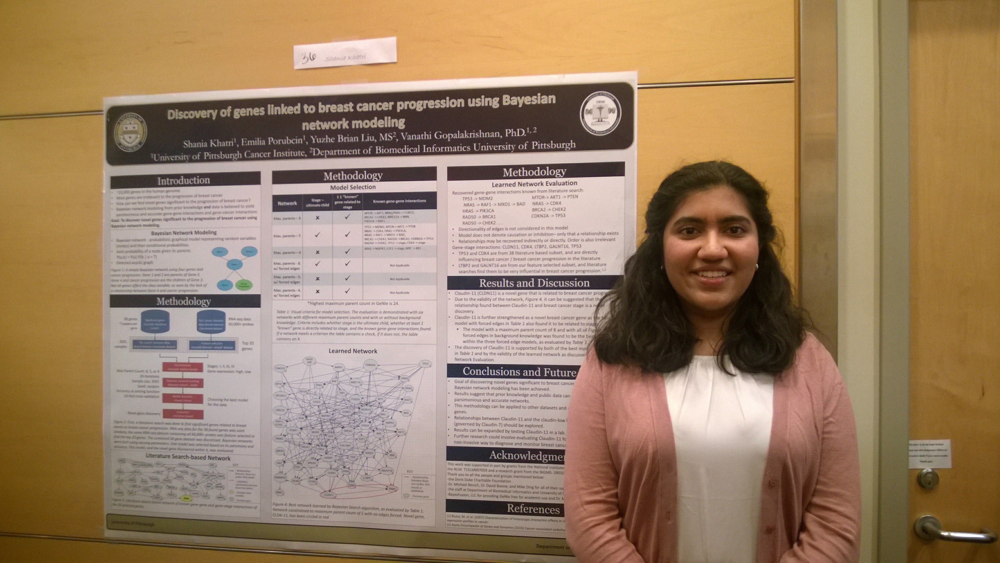
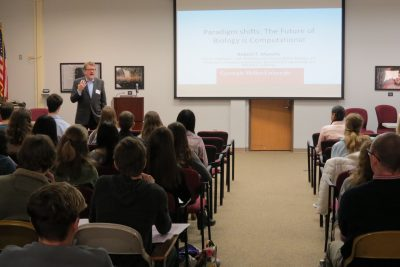
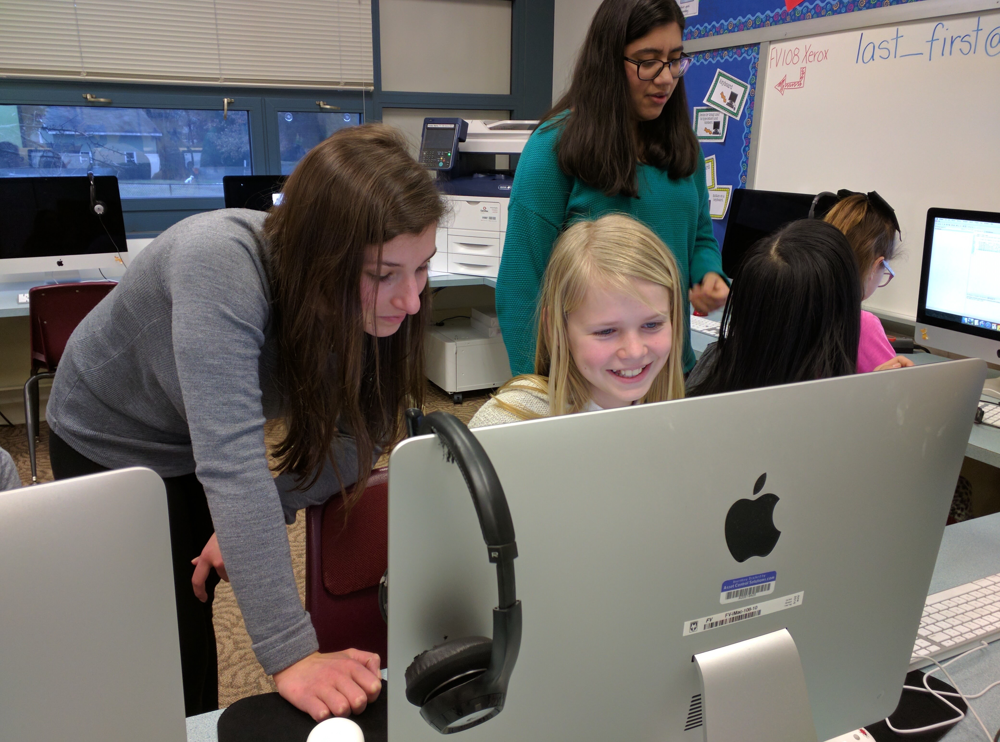
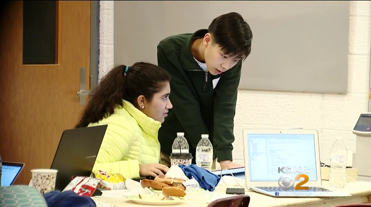

Hi! I'm Shania Khatri and I'm a 3nd year biology major at the Georgia Institute of Technology from Pittsburgh, PA. I’m passionate about the application of computer science to the field of public health. I imagine a future where computer algorithms help us discover new and exciting things about the data we
gather every day. My current scientific work focuses around the evolution of multicellularity at Georgia Tech. You can read about that, as well as my research in avian influenza, computational gene discovery,
and patient-specific clinical modeling
here.
In my free time, I'm working on a personal project to model chronic pain data with patient input variables in an app called Kairos. You can watch this space as well as my GitHub for updates.
In addition to conducting research, I’m extremely interested in education. As the daughter of Indian immigrants, education
has always been a priority in my life and I strive to make it (and the opportunities it allows for) accessible to all
students. Some of my initiatives include the Stem Junction Symposium, a symposium I chaired, sponsored by Carnegie Mellon and the University of Pittsburgh to introduce high school students across Pittsburgh to bioinformatics, and
Code Like A Girl, a program I founded for young girls to explore computer science. I'm also the founder of
The Education Initiative, a fundraiser I started in order to provide disabled children in a local non-profit rehabilitation
hospital,
The Children's Institute , with equal access to education through technology.
Finally, I have a variety of other coding and programming projects which you can find on my
GitHub page. You can read more about any of my projects by following the links above, or by visiting the appropriate
page from my homepage. If you'd like to get in touch with me, just send me an email at
shania.khatri@gmail.com. Thanks for visiting!
Scientific Research

Chlamydomonas reinhardtii, a strain of alga. We are observing its life cycle over the course of 6 days to understand cluster reproduction and phenotype.
In 2019, I studied the infection of avian influenza and seasonal influenza in lung tissue. My work identifying the colocalization of infection, Caspase-1 activation, and cell death in avian influenza-infected cells suggests pathways for the therapeautic treatment of influenza.
In 2016, I created a Bayesian framework to discover novel genes related to breast cancer progression. With this novel Bayesian framework,
I am able to suggest gene CLDN11 as a human biomarker for breast cancer progression. I've been incredibly fortunate
to have been able to present this work at the American Medical Informatics Association (AMIA)'s Annual 2016 Symposium
in Chicago and Intel International Science and Engineering Fair (ISEF) 2017. You can read a short abstract of my presentation
here.
In 2017, I built a pipeline for modeling community-acquired pneumonia. My model allows physicians to understand the clinical
variables driving each patient's illness and make informed decisions about the type of care given. I was given the opportunity
to present this research at the AMIA Annual 2017 Symposium in Washington D.C.
STEM Junction

This fall I founded the STEM Junction Symposium which is an annual symposium for high school students to gain exposure to the evolving field of bioinformatics.
The first of this annual series took place on November 15th 2017 at Fox Chapel Area High School and had approximately 200 student atendees. You can read more about the symposium here.
Code Like A Girl

The Code Like A Girl initiative was founded in order to provide an environment where girls can feel comfortable pursuing
their interests in computer science. By providing classes targeted at young girls in elementary school, as
well as providing older girls as mentors, CLG aims to remove the barriers that younger girls face and provide
them with role models to guide them on a path where they will likely be a minority for the foreseeable future. You can
read more about the project at the
Code Like A Girl website.
The Education Initative
The Education Initiative is a project to raise funds for The Children's Institute. Based in Pittsburgh Pennsylvania,
with many locations, the CI serves as an inpatient rehabilitation hospital for kids that need physical and occupational
therapy, a day school for special needs children to participate in school, an outpatient therapy clinic, and much more!
I was a patient at TCI for over 2 years, both in their outpatient therapy clinic and their inpatient rehabilitation
wing.
Children receiving inpatient treatment often spend months in the hospital. They fall behind on schoolwork, fail classes,
or have to repeat semesters. Without access to online resources like Khan Academy or technology such as Microsoft Office,
there's no way for disabled students to receive an education remotely. The money raised by the Education Initiative
is being used to buy laptops for the inpatient rehabilitation wing of the CI. The laptops are a first step in providing
the disabled community with equal access to education!
My initiative has raised over $4,750, which was donated to the Children's Institute. To view my GoFundMe page, click
here.
Other Projects

This page is for other small projects that I've done or am currently working on. I'm most proud of
chemCAT, a computational knowledge engine for chemistry that can be used by students and researchers alike to get
information on compounds, balance equations, perform stoichiometry, etc.
Check out my github page for an up to date list of my current projects, as well as some code.
To read some of my writing, visit the Fox Chapel Tapestry blog.
You can read about my initiative to bring laptops and technology to students with disabilities at the page linked here.
Finally, if you'd like to get in touch, follow the link below to send me an email!